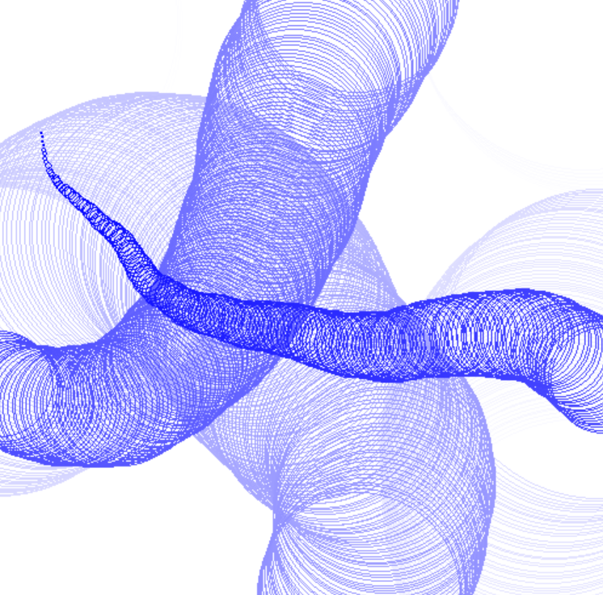

The first one will create some circles and kind of make it look like some 3d ish tunnels as it moves. The second one is the same however, you can draw the circles yourself. To create a circle just click with your mouse on the screen. To replicate the previous prgram you may hold the button on your mouse. Also for some reson scrolling makes circles awsell. Code on github
Stuff to download
